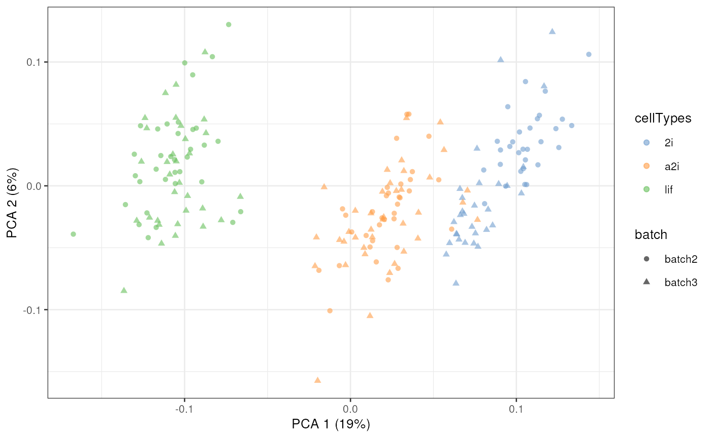
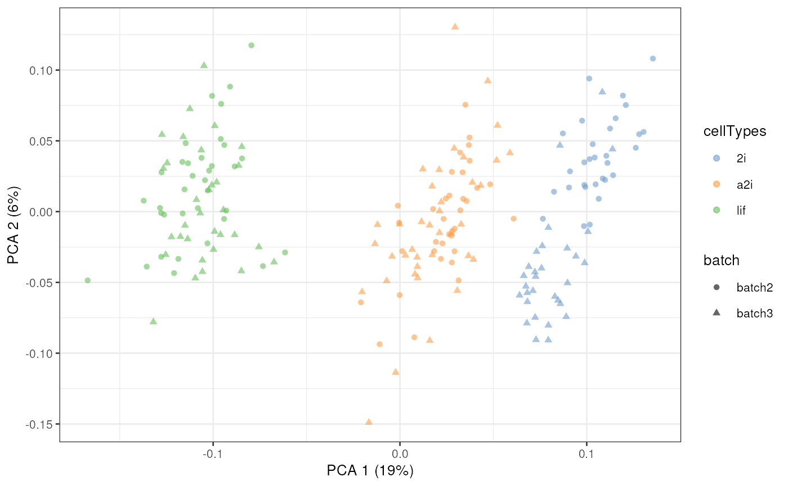
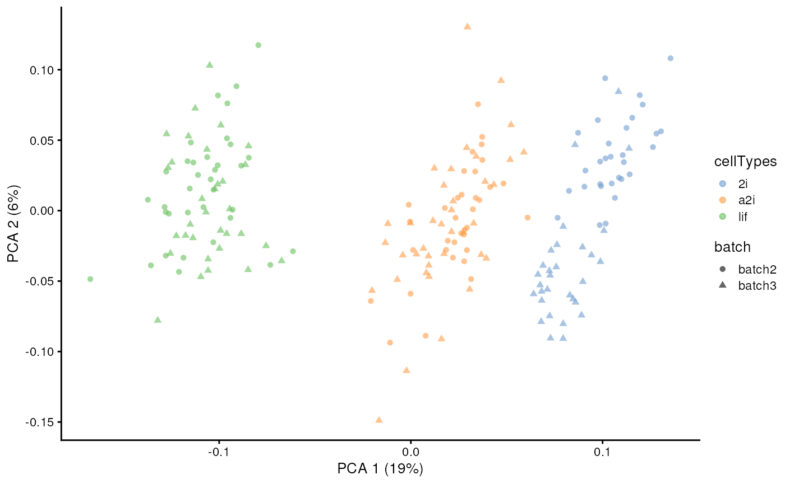
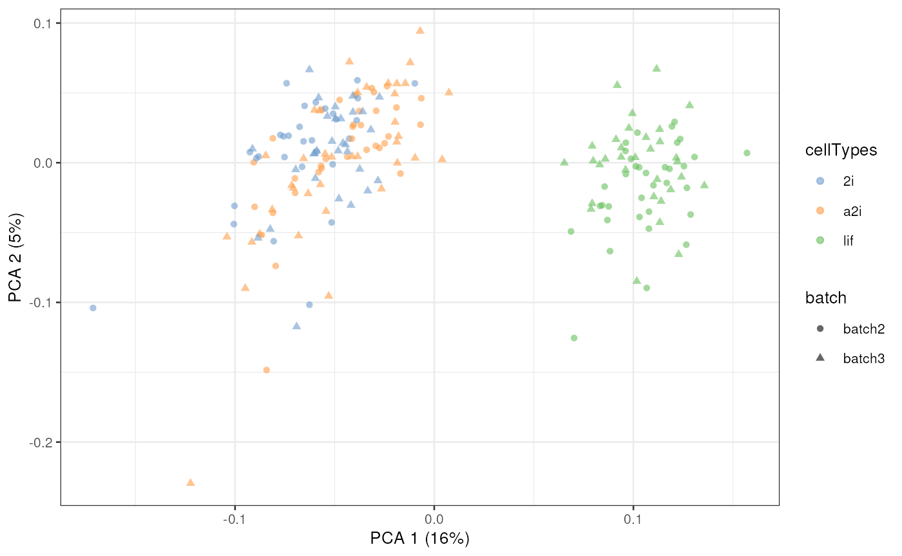
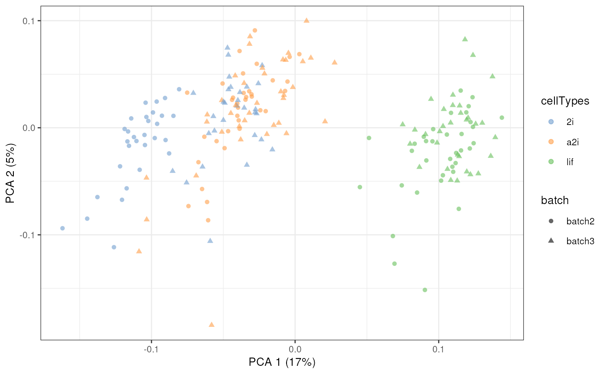

An introduction fo scMerge2
Yingxin Lin1
Source:vignettes/an_intro_to_scMerge2.Rmd
an_intro_to_scMerge2.RmdAtlas-scale single-cell multi-sample multi-condition data integration using scMerge2
Authors: Yingxin Lin2.
Last modified: 2 August, 2023.
Overview
The recent emergence of multi-sample multi-condition single-cell multi-cohort studies allows researchers to investigate different cell states. The effective integration of multiple large-cohort studies promises biological insights into cells under different conditions that individual studies cannot provide.
Description
With the rapid emergence of multi-sample multi-condition single-cell studies and the increased number of datasets for integration, our proposed scMerge2 addresses challenges associated with scalability of cells and studies as well as producing analytically ready data (i.e. adjusted expression matrix). This is achieved via three key innovations compared to the previous version of scMerge:
Hierarchical integration is used to capture both local and global variation. scMerge2 provides users with a more flexible and adaptable multi-level merging structure, of which each level can comprise multiple collections of several batches and batch correction can be performed within each collection separately using user-defined batch labels.
Pseudo-bulk construction is used to reduce computing load, allowing for the analysis of datasets containing millions of cells.
Pseudo-replication inside each condition is built, allowing for the modelling of numerous conditions.
In essence, scMerge2 takes gene expression matrices from a collection of datasets and integrates them in a hierarchical manner. The final output of scMerge2 is a single adjusted expression matrix with all input data matrices merged and ready for downstream analysis.
Pre-requisites
It is expected that students will have:
- Basic knowledge of R syntax
- Familiarity with
SingleCellExperimentobjects
Participation
While it will be possible for participants to run code as we go through the demonstration, given time constraints, I would encourage them to focus their attention into integration strategies behind scMerge2 (pseudo-replicates, pseudo-bulk, stably expressed genes, number of unwatned variation factors and hierarchical mering etc.). Questions are welcome both within the workshop and if participants choose to work through the workshop independently after the demonstration.
R / Bioconductor packages used
This workshop will focus on Bioconductor packages scMerge and [SingleCellExperiment] (https://bioconductor.org/packages/release/bioc/html/SingleCellExperiment.html).
Workshop
Loading Packages and Data
We will load the scMerge package. We designed our
package to be consistent with the popular BioConductor’s single cell
analysis framework, namely the SingleCellExperiment and
scater package.
We provided an illustrative mouse embryonic stem cell (mESC) data in our package, as well as a set of pre-computed stably expressed gene (SEG) list to be used as negative control genes.
The full curated, unnormalised mESC data can be found here.
The scMerge package comes with a sub-sampled, two-batches
version of this data (named “batch2” and “batch3” to be consistent with
the full data) .
## Subsetted mouse ESC data
data("example_sce", package = "scMerge")
data("segList_ensemblGeneID", package = "scMerge")In this mESC data, we pooled data from 2 different batches from three
different cell types. Using a PCA plot, we can see that despite strong
separation of cell types, there is also a strong separation due to batch
effects. This information is stored in the colData of
example_sce.
example_sce = runPCA(example_sce, exprs_values = "logcounts")
scater::plotPCA(example_sce,
colour_by = "cellTypes",
shape_by = "batch")
scMerge2
Unsupervised scMerge2
In unsupervised scMerge2, we will perform graph
clustering on shared nearest neighbour graphs within each batch to
obtain pseudo-replicates. This requires the users to supply a
k_celltype vector with the number of neighbour when
constructed the nearest neighbour graph in each of the batches. By
default, this number is 10.
scMerge2_res <- scMerge2(exprsMat = logcounts(example_sce),
batch = example_sce$batch,
ctl = segList_ensemblGeneID$mouse$mouse_scSEG,
verbose = FALSE)
#> Warning in (function (A, nv = 5, nu = nv, maxit = 1000, work = nv + 7, reorth =
#> TRUE, : You're computing too large a percentage of total singular values, use a
#> standard svd instead.
#> Warning in (function (A, nv = 5, nu = nv, maxit = 1000, work = nv + 7, reorth =
#> TRUE, : You're computing too large a percentage of total singular values, use a
#> standard svd instead.
assay(example_sce, "scMerge2") <- scMerge2_res$newY
set.seed(2022)
example_sce <- scater::runPCA(example_sce, exprs_values = 'scMerge2')
#> Warning: useNames = NA is deprecated. Instead, specify either useNames = TRUE
#> or useNames = TRUE.
scater::plotPCA(example_sce, colour_by = 'cellTypes', shape = 'batch')
Semi-supervised scMerge2
When cell type information are known (e.g. results from cell type
classification using reference), scMerge2 can use this information to
construct pseudo-replicates and identify mutual nearest groups with
cellTypes input.
scMerge2_res <- scMerge2(exprsMat = logcounts(example_sce),
batch = example_sce$batch,
cellTypes = example_sce$cellTypes,
ctl = segList_ensemblGeneID$mouse$mouse_scSEG,
verbose = FALSE)
assay(example_sce, "scMerge2") <- scMerge2_res$newY
example_sce = scater::runPCA(example_sce, exprs_values = 'scMerge2')
#> Warning: useNames = NA is deprecated. Instead, specify either useNames = TRUE
#> or useNames = TRUE.
scater::plotPCA(example_sce, colour_by = 'cellTypes', shape = 'batch')
More details of scMerge2
Number of pseudobulk
The number of pseudobulk constructed within each cell grouping is set
via k_pseudoBulk. By default, this number is set as 30. A
larger number will create more pseudo-bulk data in model estimation,
with longer time in estimation.
scMerge2_res <- scMerge2(exprsMat = logcounts(example_sce),
batch = example_sce$batch,
ctl = segList_ensemblGeneID$mouse$mouse_scSEG,
k_pseudoBulk = 50,
verbose = FALSE)
#> Warning in (function (A, nv = 5, nu = nv, maxit = 1000, work = nv + 7, reorth =
#> TRUE, : You're computing too large a percentage of total singular values, use a
#> standard svd instead.
#> Warning in (function (A, nv = 5, nu = nv, maxit = 1000, work = nv + 7, reorth =
#> TRUE, : You're computing too large a percentage of total singular values, use a
#> standard svd instead.
assay(example_sce, "scMerge2") <- scMerge2_res$newY
set.seed(2022)
example_sce <- scater::runPCA(example_sce, exprs_values = 'scMerge2')
#> Warning: useNames = NA is deprecated. Instead, specify either useNames = TRUE
#> or useNames = TRUE.
scater::plotPCA(example_sce, colour_by = 'cellTypes', shape = 'batch')
Return matrix by batch
When working with large data, we can get the adjusted matrix for a
smaller subset of cells each time. This can be achieved by setting
return_matrix to FALSE in
scMerge2() function, which the function then will not
return the adjusted whole matrix but will output the estimated
fullalpha. Then to get the adjusted matrix using the
estimated fullalpha, we first need to performed cosine
normalisation on the logcounts matrix and then calculate the row-wise
(gene-wise) mean of the cosine normalised matrix (This is because by
default, scMerge2() perform cosine normalisation on the
log-normalised matrix before RUVIII step). Then we can use
getAdjustedMat() to adjust the matrix of a subset of cells
each time.
scMerge2_res <- scMerge2(exprsMat = logcounts(example_sce),
batch = example_sce$batch,
ctl = segList_ensemblGeneID$mouse$mouse_scSEG,
verbose = FALSE,
return_matrix = FALSE)
#> Warning in (function (A, nv = 5, nu = nv, maxit = 1000, work = nv + 7, reorth =
#> TRUE, : You're computing too large a percentage of total singular values, use a
#> standard svd instead.
#> Warning in (function (A, nv = 5, nu = nv, maxit = 1000, work = nv + 7, reorth =
#> TRUE, : You're computing too large a percentage of total singular values, use a
#> standard svd instead.
cosineNorm_mat <- batchelor::cosineNorm(logcounts(example_sce))
adjusted_means <- DelayedMatrixStats::rowMeans2(cosineNorm_mat)
newY <- list()
for (i in levels(example_sce$batch)) {
newY[[i]] <- getAdjustedMat(cosineNorm_mat[, example_sce$batch == i],
scMerge2_res$fullalpha,
ctl = segList_ensemblGeneID$mouse$mouse_scSEG,
ruvK = 20,
adjusted_means = adjusted_means)
}
newY <- do.call(cbind, newY)
assay(example_sce, "scMerge2") <- newY[, colnames(example_sce)]
set.seed(2022)
example_sce <- scater::runPCA(example_sce, exprs_values = 'scMerge2')
#> Warning: useNames = NA is deprecated. Instead, specify either useNames = TRUE
#> or useNames = TRUE.
scater::plotPCA(example_sce, colour_by = 'cellTypes', shape = 'batch')Note that we can also adjust only a subset of genes by input a gene
list in return_subset_genes in both
getAdjustedMat() and scMerge2().
Hierarchical scMerge2
scMerge2 provides a hierarchical merging strategy for data
integration that requires multiple level adjustment through function
scMerge2h(). For example, for the dataset with multiple
samples, we may want to remove the sample effect first within the
dataset before integrate it with other datasets. Below, we will
illustrate how we can build a hierarchical merging order as input for
scMerge2h().
For illustration purpose, here I first create a fake sample information for the sample data. Now, each batch has two samples.
# Create a fake sample information
example_sce$sample <- rep(c(1:4), each = 50)
table(example_sce$sample, example_sce$batch)
#>
#> batch2 batch3
#> 1 50 0
#> 2 50 0
#> 3 0 50
#> 4 0 50To perform scMerge2h, we need to create
- a hierarchical index list that indicates the indices of the cells that are going into merging;
- a batch information list that indicates the batch information of each merging.
Scenario 1
We will first illustrate that a two-level merging case, where the first level refers to the sample effect removal within each batch, and the second level refers to the merging of two batches.
First, we will construct the hierarchical index list
(h_idx_list). The hierarchical index list is a list that
indicates for each level, which indices of the cells are going into
merging. The number of the element of the list should be the same with
the number of level of merging. For each element, it should contain a
list of vectors of indices of each merging.
# Construct a hierarchical index list
h_idx_list <- list(level1 = split(seq_len(ncol(example_sce)), example_sce$batch),
level2 = list(seq_len(ncol(example_sce))))On level 1, we will perform two merging, one for each batch. Therefore, we have a list of two vectors of indices. Each indicates the indices of the cells of the batches.
h_idx_list$level1
#> $batch2
#> [1] 1 2 3 4 5 6 7 8 9 10 11 12 13 14 15 16 17 18
#> [19] 19 20 21 22 23 24 25 26 27 28 29 30 31 32 33 34 35 36
#> [37] 37 38 39 40 41 42 43 44 45 46 47 48 49 50 51 52 53 54
#> [55] 55 56 57 58 59 60 61 62 63 64 65 66 67 68 69 70 71 72
#> [73] 73 74 75 76 77 78 79 80 81 82 83 84 85 86 87 88 89 90
#> [91] 91 92 93 94 95 96 97 98 99 100
#>
#> $batch3
#> [1] 101 102 103 104 105 106 107 108 109 110 111 112 113 114 115 116 117 118
#> [19] 119 120 121 122 123 124 125 126 127 128 129 130 131 132 133 134 135 136
#> [37] 137 138 139 140 141 142 143 144 145 146 147 148 149 150 151 152 153 154
#> [55] 155 156 157 158 159 160 161 162 163 164 165 166 167 168 169 170 171 172
#> [73] 173 174 175 176 177 178 179 180 181 182 183 184 185 186 187 188 189 190
#> [91] 191 192 193 194 195 196 197 198 199 200On level 2, we will perform one merging to merge two batches. Therefore, we have a list of one vector of indices, indicates all the indices of the cells of the full data.
h_idx_list$level2
#> [[1]]
#> [1] 1 2 3 4 5 6 7 8 9 10 11 12 13 14 15 16 17 18
#> [19] 19 20 21 22 23 24 25 26 27 28 29 30 31 32 33 34 35 36
#> [37] 37 38 39 40 41 42 43 44 45 46 47 48 49 50 51 52 53 54
#> [55] 55 56 57 58 59 60 61 62 63 64 65 66 67 68 69 70 71 72
#> [73] 73 74 75 76 77 78 79 80 81 82 83 84 85 86 87 88 89 90
#> [91] 91 92 93 94 95 96 97 98 99 100 101 102 103 104 105 106 107 108
#> [109] 109 110 111 112 113 114 115 116 117 118 119 120 121 122 123 124 125 126
#> [127] 127 128 129 130 131 132 133 134 135 136 137 138 139 140 141 142 143 144
#> [145] 145 146 147 148 149 150 151 152 153 154 155 156 157 158 159 160 161 162
#> [163] 163 164 165 166 167 168 169 170 171 172 173 174 175 176 177 178 179 180
#> [181] 181 182 183 184 185 186 187 188 189 190 191 192 193 194 195 196 197 198
#> [199] 199 200Next, we need to create the batch information list
(batch_list), which has the same structure with the
h_idx_list, but indicates the batch label of the
h_idx_list.
# Construct a batch information list
batch_list <- list(level1 = split(example_sce$sample, example_sce$batch),
level2 = list(example_sce$batch))We can see batch_list indicates the batch label for
level of the merging.
batch_list$level1
#> $batch2
#> [1] 1 1 1 1 1 1 1 1 1 1 1 1 1 1 1 1 1 1 1 1 1 1 1 1 1 1 1 1 1 1 1 1 1 1 1 1 1
#> [38] 1 1 1 1 1 1 1 1 1 1 1 1 1 2 2 2 2 2 2 2 2 2 2 2 2 2 2 2 2 2 2 2 2 2 2 2 2
#> [75] 2 2 2 2 2 2 2 2 2 2 2 2 2 2 2 2 2 2 2 2 2 2 2 2 2 2
#>
#> $batch3
#> [1] 3 3 3 3 3 3 3 3 3 3 3 3 3 3 3 3 3 3 3 3 3 3 3 3 3 3 3 3 3 3 3 3 3 3 3 3 3
#> [38] 3 3 3 3 3 3 3 3 3 3 3 3 3 4 4 4 4 4 4 4 4 4 4 4 4 4 4 4 4 4 4 4 4 4 4 4 4
#> [75] 4 4 4 4 4 4 4 4 4 4 4 4 4 4 4 4 4 4 4 4 4 4 4 4 4 4Now, we can input the batch_list and
h_idx_list in scMerge2h to merge the data
hierarchically. We also need to input a ruvK_list, a vector
of number of unwanted variation (k in RUV model) for each level of the
merging. We suggest a lower ruvK in the first level. Here
we set ruvK_list = c(2, 5) which indicates we will set
RUV’s k equal to 2 in the first level and 5 in the second level.
scMerge2_res <- scMerge2h(exprsMat = logcounts(example_sce),
batch_list = batch_list,
h_idx_list = h_idx_list,
ctl = segList_ensemblGeneID$mouse$mouse_scSEG,
ruvK_list = c(2, 5),
verbose = FALSE)The output of scMerge2h is a list of matrices indicates
the adjusted matrix from each level.
length(scMerge2_res)
#> [1] 2
lapply(scMerge2_res, dim)
#> [[1]]
#> [1] 1047 200
#>
#> [[2]]
#> [1] 1047 200Here we will use the adjusted matrix from the last level as the final adjusted matrix.
assay(example_sce, "scMerge2") <- scMerge2_res[[length(h_idx_list)]]
set.seed(2022)
example_sce <- scater::runPCA(example_sce, exprs_values = 'scMerge2')
#> Warning: useNames = NA is deprecated. Instead, specify either useNames = TRUE
#> or useNames = TRUE.
scater::plotPCA(example_sce, colour_by = 'cellTypes', shape = 'batch')
Scenario 2
scMerge2h can handle a flexible merging strategy input. For example, on level 1 above, we can only merge data for one batch. As an example, we can start from modify the batch index list and hierarchical index list to remove the list of batch 2 on level 1.
h_idx_list2 <- h_idx_list
batch_list2 <- batch_list
h_idx_list2$level1$batch2 <- NULL
batch_list2$level1$batch2 <- NULL
print(h_idx_list2)
#> $level1
#> $level1$batch3
#> [1] 101 102 103 104 105 106 107 108 109 110 111 112 113 114 115 116 117 118
#> [19] 119 120 121 122 123 124 125 126 127 128 129 130 131 132 133 134 135 136
#> [37] 137 138 139 140 141 142 143 144 145 146 147 148 149 150 151 152 153 154
#> [55] 155 156 157 158 159 160 161 162 163 164 165 166 167 168 169 170 171 172
#> [73] 173 174 175 176 177 178 179 180 181 182 183 184 185 186 187 188 189 190
#> [91] 191 192 193 194 195 196 197 198 199 200
#>
#>
#> $level2
#> $level2[[1]]
#> [1] 1 2 3 4 5 6 7 8 9 10 11 12 13 14 15 16 17 18
#> [19] 19 20 21 22 23 24 25 26 27 28 29 30 31 32 33 34 35 36
#> [37] 37 38 39 40 41 42 43 44 45 46 47 48 49 50 51 52 53 54
#> [55] 55 56 57 58 59 60 61 62 63 64 65 66 67 68 69 70 71 72
#> [73] 73 74 75 76 77 78 79 80 81 82 83 84 85 86 87 88 89 90
#> [91] 91 92 93 94 95 96 97 98 99 100 101 102 103 104 105 106 107 108
#> [109] 109 110 111 112 113 114 115 116 117 118 119 120 121 122 123 124 125 126
#> [127] 127 128 129 130 131 132 133 134 135 136 137 138 139 140 141 142 143 144
#> [145] 145 146 147 148 149 150 151 152 153 154 155 156 157 158 159 160 161 162
#> [163] 163 164 165 166 167 168 169 170 171 172 173 174 175 176 177 178 179 180
#> [181] 181 182 183 184 185 186 187 188 189 190 191 192 193 194 195 196 197 198
#> [199] 199 200
print(batch_list2)
#> $level1
#> $level1$batch3
#> [1] 3 3 3 3 3 3 3 3 3 3 3 3 3 3 3 3 3 3 3 3 3 3 3 3 3 3 3 3 3 3 3 3 3 3 3 3 3
#> [38] 3 3 3 3 3 3 3 3 3 3 3 3 3 4 4 4 4 4 4 4 4 4 4 4 4 4 4 4 4 4 4 4 4 4 4 4 4
#> [75] 4 4 4 4 4 4 4 4 4 4 4 4 4 4 4 4 4 4 4 4 4 4 4 4 4 4
#>
#>
#> $level2
#> $level2[[1]]
#> [1] batch2 batch2 batch2 batch2 batch2 batch2 batch2 batch2 batch2 batch2
#> [11] batch2 batch2 batch2 batch2 batch2 batch2 batch2 batch2 batch2 batch2
#> [21] batch2 batch2 batch2 batch2 batch2 batch2 batch2 batch2 batch2 batch2
#> [31] batch2 batch2 batch2 batch2 batch2 batch2 batch2 batch2 batch2 batch2
#> [41] batch2 batch2 batch2 batch2 batch2 batch2 batch2 batch2 batch2 batch2
#> [51] batch2 batch2 batch2 batch2 batch2 batch2 batch2 batch2 batch2 batch2
#> [61] batch2 batch2 batch2 batch2 batch2 batch2 batch2 batch2 batch2 batch2
#> [71] batch2 batch2 batch2 batch2 batch2 batch2 batch2 batch2 batch2 batch2
#> [81] batch2 batch2 batch2 batch2 batch2 batch2 batch2 batch2 batch2 batch2
#> [91] batch2 batch2 batch2 batch2 batch2 batch2 batch2 batch2 batch2 batch2
#> [101] batch3 batch3 batch3 batch3 batch3 batch3 batch3 batch3 batch3 batch3
#> [111] batch3 batch3 batch3 batch3 batch3 batch3 batch3 batch3 batch3 batch3
#> [121] batch3 batch3 batch3 batch3 batch3 batch3 batch3 batch3 batch3 batch3
#> [131] batch3 batch3 batch3 batch3 batch3 batch3 batch3 batch3 batch3 batch3
#> [141] batch3 batch3 batch3 batch3 batch3 batch3 batch3 batch3 batch3 batch3
#> [151] batch3 batch3 batch3 batch3 batch3 batch3 batch3 batch3 batch3 batch3
#> [161] batch3 batch3 batch3 batch3 batch3 batch3 batch3 batch3 batch3 batch3
#> [171] batch3 batch3 batch3 batch3 batch3 batch3 batch3 batch3 batch3 batch3
#> [181] batch3 batch3 batch3 batch3 batch3 batch3 batch3 batch3 batch3 batch3
#> [191] batch3 batch3 batch3 batch3 batch3 batch3 batch3 batch3 batch3 batch3
#> Levels: batch2 batch3
scMerge2_res <- scMerge2h(exprsMat = logcounts(example_sce),
batch_list = batch_list2,
h_idx_list = h_idx_list2,
ctl = segList_ensemblGeneID$mouse$mouse_scSEG,
ruvK_list = c(2, 5),
verbose = FALSE)
assay(example_sce, "scMerge2") <- scMerge2_res[[length(h_idx_list)]]
set.seed(2022)
example_sce <- scater::runPCA(example_sce, exprs_values = 'scMerge2')
#> Warning: useNames = NA is deprecated. Instead, specify either useNames = TRUE
#> or useNames = TRUE.
scater::plotPCA(example_sce, colour_by = 'cellTypes', shape = 'batch')
Session Info
sessionInfo()
#> R version 4.3.1 (2023-06-16)
#> Platform: x86_64-pc-linux-gnu (64-bit)
#> Running under: Ubuntu 22.04.2 LTS
#>
#> Matrix products: default
#> BLAS: /usr/lib/x86_64-linux-gnu/openblas-pthread/libblas.so.3
#> LAPACK: /usr/lib/x86_64-linux-gnu/openblas-pthread/libopenblasp-r0.3.20.so; LAPACK version 3.10.0
#>
#> locale:
#> [1] LC_CTYPE=en_US.UTF-8 LC_NUMERIC=C
#> [3] LC_TIME=en_US.UTF-8 LC_COLLATE=en_US.UTF-8
#> [5] LC_MONETARY=en_US.UTF-8 LC_MESSAGES=en_US.UTF-8
#> [7] LC_PAPER=en_US.UTF-8 LC_NAME=C
#> [9] LC_ADDRESS=C LC_TELEPHONE=C
#> [11] LC_MEASUREMENT=en_US.UTF-8 LC_IDENTIFICATION=C
#>
#> time zone: Etc/UTC
#> tzcode source: system (glibc)
#>
#> attached base packages:
#> [1] stats4 stats graphics grDevices utils datasets methods
#> [8] base
#>
#> other attached packages:
#> [1] scater_1.29.0 ggplot2_3.4.2
#> [3] scuttle_1.11.0 scMerge_1.17.0
#> [5] SingleCellExperiment_1.23.0 SummarizedExperiment_1.31.1
#> [7] Biobase_2.61.0 GenomicRanges_1.53.1
#> [9] GenomeInfoDb_1.37.2 IRanges_2.35.2
#> [11] S4Vectors_0.39.1 BiocGenerics_0.47.0
#> [13] MatrixGenerics_1.13.1 matrixStats_1.0.0
#>
#> loaded via a namespace (and not attached):
#> [1] RColorBrewer_1.1-3 rstudioapi_0.15.0
#> [3] jsonlite_1.8.7 magrittr_2.0.3
#> [5] ggbeeswarm_0.7.2 farver_2.1.1
#> [7] rmarkdown_2.23 fs_1.6.3
#> [9] zlibbioc_1.47.0 ragg_1.2.5
#> [11] vctrs_0.6.3 memoise_2.0.1
#> [13] DelayedMatrixStats_1.23.0 RCurl_1.98-1.12
#> [15] base64enc_0.1-3 htmltools_0.5.5
#> [17] S4Arrays_1.1.5 BiocNeighbors_1.19.0
#> [19] SparseArray_1.1.11 Formula_1.2-5
#> [21] sass_0.4.7 StanHeaders_2.26.27
#> [23] reldist_1.7-2 KernSmooth_2.23-22
#> [25] bslib_0.5.0 htmlwidgets_1.6.2
#> [27] desc_1.4.2 cachem_1.0.8
#> [29] ResidualMatrix_1.11.0 sfsmisc_1.1-15
#> [31] igraph_1.5.0.1 startupmsg_0.9.6
#> [33] lifecycle_1.0.3 pkgconfig_2.0.3
#> [35] M3Drop_1.27.0 rsvd_1.0.5
#> [37] Matrix_1.6-0 R6_2.5.1
#> [39] fastmap_1.1.1 GenomeInfoDbData_1.2.10
#> [41] digest_0.6.33 numDeriv_2016.8-1.1
#> [43] colorspace_2.1-0 ps_1.7.5
#> [45] rprojroot_2.0.3 dqrng_0.3.0
#> [47] irlba_2.3.5.1 textshaping_0.3.6
#> [49] Hmisc_5.1-0 beachmat_2.17.14
#> [51] labeling_0.4.2 fansi_1.0.4
#> [53] abind_1.4-5 mgcv_1.9-0
#> [55] compiler_4.3.1 withr_2.5.0
#> [57] htmlTable_2.4.1 backports_1.4.1
#> [59] inline_0.3.19 BiocParallel_1.35.3
#> [61] viridis_0.6.4 highr_0.10
#> [63] pkgbuild_1.4.2 gplots_3.1.3
#> [65] MASS_7.3-60 proxyC_0.3.3
#> [67] DelayedArray_0.27.10 bluster_1.11.3
#> [69] gtools_3.9.4 caTools_1.18.2
#> [71] loo_2.6.0 distr_2.9.2
#> [73] tools_4.3.1 vipor_0.4.5
#> [75] foreign_0.8-84 beeswarm_0.4.0
#> [77] nnet_7.3-19 glue_1.6.2
#> [79] batchelor_1.17.2 callr_3.7.3
#> [81] nlme_3.1-162 cvTools_0.3.2
#> [83] grid_4.3.1 checkmate_2.2.0
#> [85] cluster_2.1.4 gtable_0.3.3
#> [87] data.table_1.14.8 metapod_1.9.0
#> [89] BiocSingular_1.17.1 ScaledMatrix_1.9.1
#> [91] utf8_1.2.3 XVector_0.41.1
#> [93] ggrepel_0.9.3 pillar_1.9.0
#> [95] stringr_1.5.0 limma_3.57.6
#> [97] robustbase_0.99-0 splines_4.3.1
#> [99] lattice_0.21-8 densEstBayes_1.0-2.2
#> [101] ruv_0.9.7.1 locfit_1.5-9.8
#> [103] knitr_1.43 gridExtra_2.3
#> [105] edgeR_3.43.7 xfun_0.39
#> [107] statmod_1.5.0 DEoptimR_1.1-0
#> [109] rstan_2.21.8 stringi_1.7.12
#> [111] yaml_2.3.7 evaluate_0.21
#> [113] codetools_0.2-19 bbmle_1.0.25
#> [115] tibble_3.2.1 cli_3.6.1
#> [117] RcppParallel_5.1.7 rpart_4.1.19
#> [119] systemfonts_1.0.4 munsell_0.5.0
#> [121] processx_3.8.2 jquerylib_0.1.4
#> [123] Rcpp_1.0.11 bdsmatrix_1.3-6
#> [125] parallel_4.3.1 rstantools_2.3.1.1
#> [127] pkgdown_2.0.7 prettyunits_1.1.1
#> [129] scran_1.29.0 sparseMatrixStats_1.13.0
#> [131] bitops_1.0-7 viridisLite_0.4.2
#> [133] mvtnorm_1.2-2 scales_1.2.1
#> [135] purrr_1.0.1 crayon_1.5.2
#> [137] rlang_1.1.1Yale University↩︎